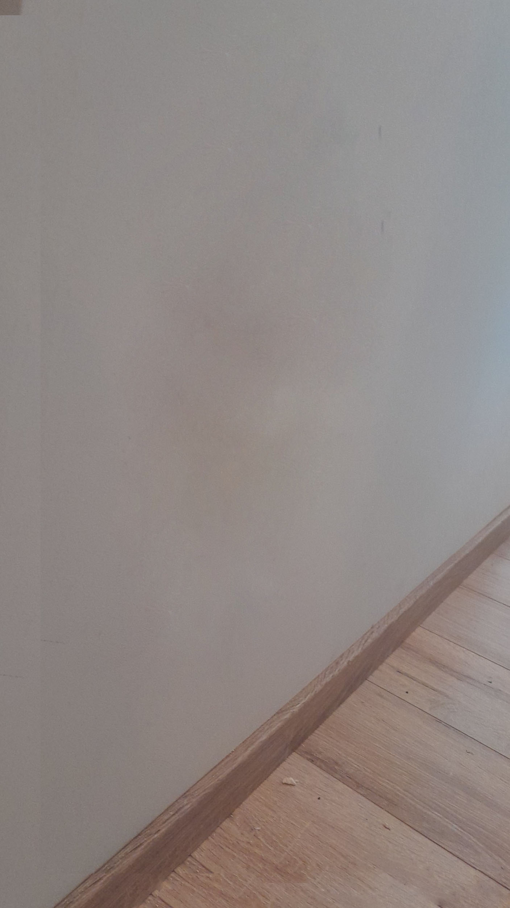
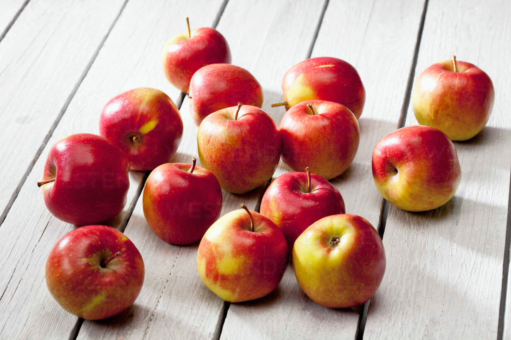
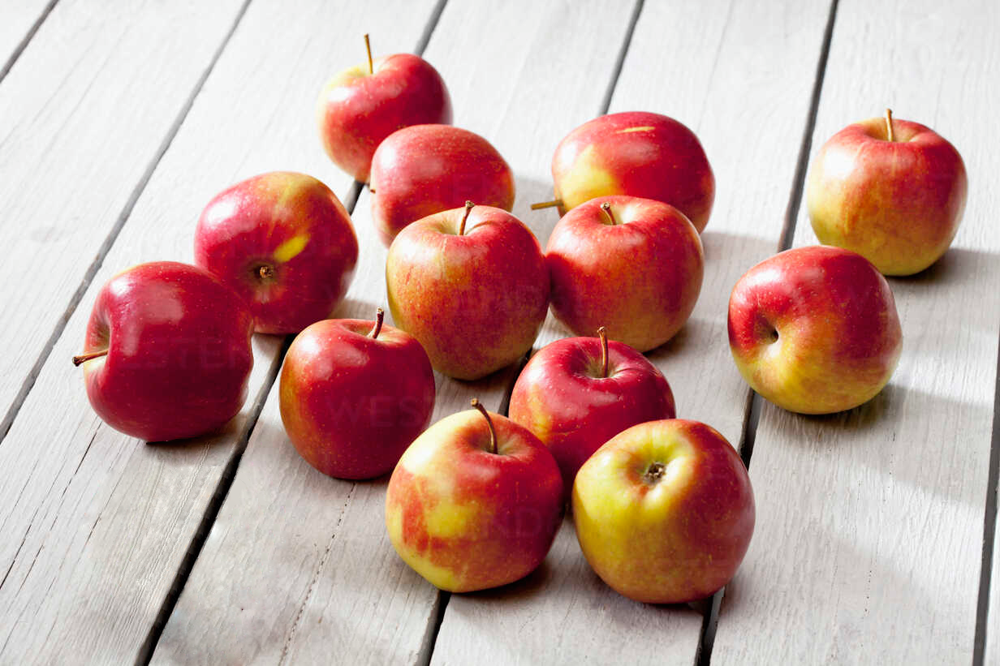
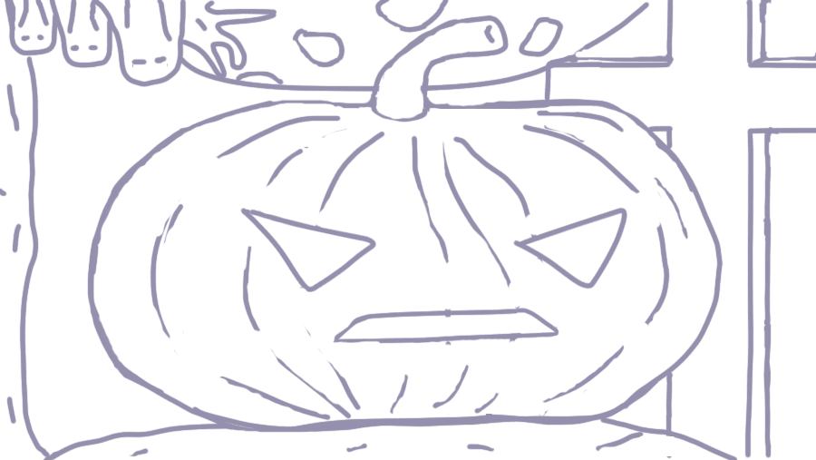

Adobe Photoshop on maailma juhtiv pilditöötlus- ja graafikadisaini tarkvara, mida kasutatakse fotode täiustamiseks, manipuleerimiseks ja digitaalse kunsti loomiseks. See pakub laia valikut professionaalseid tööriistu, mis võimaldavad töötada kihtidega, eemaldada piltidelt objekte ning kujundada visuaale nii veebi kui ka trükiste jaoks.
Patch Tool võimaldab parandada pildil suuremaid alasid, asendades valitud piirkonna teise koha tekstuuriga, sobitades seejuures automaatselt valgustuse ja varjud. Select-tööriistad on aga mõeldud konkreetsete objektide või piirkondade piiritlemiseks, et saaksid neid eraldi muuta, liigutada või ülejäänud pildist isoleerida.
| Original | New |
|  |
| |
Kasutades Selecti, Layereid , Eyedropperit, Paintbucketit ja Patch tööriista.
| Original | New |
|  |  |
Kasutades Selecti, Layereid , Eyedropperit, Paintbucketit ja Patch tööriista.
| Original | New |
 |  |
Kasutades kõike eelnevat, ning nüüd ka Adjustment Layereid koloriseerisin foto ära.
| Original | New |
 | |
Photoshopi final boss - Digitaaljoonistus, sketchi ja layeritepõhise detailide ning objektide renderdusega.
| Sketch | Final |
|  |  |